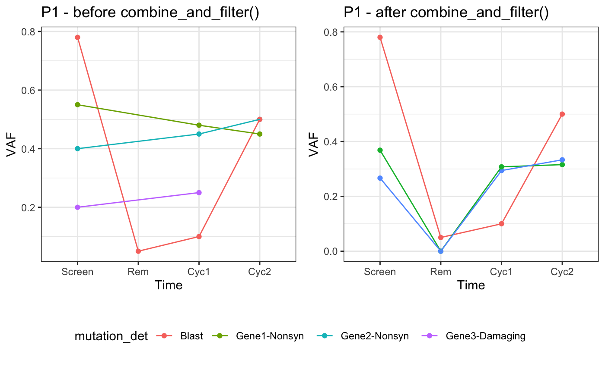

The varikondo R package comprises several helper and import functions that can be used to convert output from any of the callers mentioned above to a standardised format.
First, let’s load the package.
VCF
The function parse_vcf_output() allows to convert a VCF file generated by one of four callers GATK3 MuTect2, VarDict, VarScan, and FreeBayes to a data frame with standardised fields. This is because different callers annotate the INFO field in the VCF ouput in different ways, using different names for read depth, variant allele frequency etc… The output from parse_vcf_output() can then be used as input for import_any() to combine variants and clinical information for different samples within the same patients and to fill in missing variants at specific time points. If the variants in the VCF file are also annotated with the Variant Effect Predictor (VEP) (McLaren et al. 2016), vep = TRUE will parse the extra fields.
VEP might annotate the same variant multiple times, depending on whether a variants falls on several transcripts. VEP pastes together different annotations on the same line. parse_vcf_output() will reshape the input variants and return it in a long format by stacking all the annotations one underneath each other. This has the potential to largely increase the size of the ouput file. To overcome this problem it is possible to read in R only restricted genomic regions at one time by specifying a GRanges() object in parse_vcf_output(param = VariantAnnotation::ScanVcfParam()). The param argument is directly passed to VariantAnnotation::readVcf() within parse_vcf_output().
The example VCF files below were annotated with VEP. Also chr20_varscan.vcf.gz, chr20_vardict.vcf.gz are available as example.
annot_vcf_mutect <- system.file("extdata", "chr20_mutect.vcf.gz", package = "varikondo")
annot_vcf_mutect
#> [1] "/Users/quaglieri.a/Library/R/3.5/library/varikondo/extdata/chr20_mutect.vcf.gz"VCF files from VarDict, VarScan, and freebayes can be parsed by specifying caller = "vardict", caller = "varscan", caller = "freebayes".
parsed_vcf_mutect <- varikondo::parse_vcf_output(vcf_path = annot_vcf_mutect,
caller = "mutect",
sample_name = "Sample1",
vep = TRUE)| Location | caller | chrom | pos | end | ref | alt | qual | filter | genotype | tot_depth | VAF | ref_depth | alt_depth | ref_forw | ref_rev | alt_forw | alt_rev | start | width | ref_base_quality | alt_base_quality | SampleName | Allele | Consequence | IMPACT | SYMBOL | Gene | Feature_type | Feature | BIOTYPE | EXON | INTRON | HGVSc | HGVSp | cDNA_position | CDS_position | Protein_position | Amino_acids | Codons | Existing_variation | DISTANCE | STRAND | FLAGS | VARIANT_CLASS | SYMBOL_SOURCE | HGNC_ID | CANONICAL | TSL | APPRIS | CCDS | ENSP | SWISSPROT | TREMBL | UNIPARC | GENE_PHENO | SIFT | PolyPhen | DOMAINS | AF | AFR_AF | AMR_AF | EAS_AF | EUR_AF | SAS_AF | AA_AF | EA_AF | ExAC_AF | ExAC_Adj_AF | ExAC_AFR_AF | ExAC_AMR_AF | ExAC_EAS_AF | ExAC_FIN_AF | ExAC_NFE_AF | ExAC_OTH_AF | ExAC_SAS_AF | MAX_AF | MAX_AF_POPS | CLIN_SIG | SOMATIC | PHENO | PUBMED | MOTIF_NAME | MOTIF_POS | HIGH_INF_POS | MOTIF_SCORE_CHANGE | IMPACT_rank |
|---|---|---|---|---|---|---|---|---|---|---|---|---|---|---|---|---|---|---|---|---|---|---|---|---|---|---|---|---|---|---|---|---|---|---|---|---|---|---|---|---|---|---|---|---|---|---|---|---|---|---|---|---|---|---|---|---|---|---|---|---|---|---|---|---|---|---|---|---|---|---|---|---|---|---|---|---|---|---|---|---|---|---|---|---|---|---|
| chr20_30948281 | mutect2 | chr20 | 30948281 | 30948281 | A | G | 11.000 | PASS | 0/1 | 3 | 1 | 0 | 3 | 0 | 0 | 0 | 3 | 30948281 | 1 | 0 | 66 | Sample1 | G | intron_variant | MODIFIER | ASXL1 | ENSG00000171456 | Transcript | ENST00000306058 | protein_coding | 1/11 | rs2208131 | 1 | SNV | HGNC | 18318 | ENSP00000305119 | A6NIZ6 | UPI00015DF8B6 | 1 | 0.4093 | 0.1672 | 0.4337 | 0.744 | 0.3499 | 0.4356 | 0.744 | EAS | 1 | |||||||||||||||||||||||||||||||||||||
| chr20_30948281 | mutect2 | chr20 | 30948281 | 30948281 | A | G | 11.000 | PASS | 0/1 | 3 | 1 | 0 | 3 | 0 | 0 | 0 | 3 | 30948281 | 1 | 0 | 66 | Sample1 | G | intron_variant | MODIFIER | ASXL1 | ENSG00000171456 | Transcript | ENST00000375687 | protein_coding | 1/12 | rs2208131 | 1 | SNV | HGNC | 18318 | YES | CCDS13201.1 | ENSP00000364839 | Q8IXJ9 | UPI000036702C | 1 | 0.4093 | 0.1672 | 0.4337 | 0.744 | 0.3499 | 0.4356 | 0.744 | EAS | 1 | |||||||||||||||||||||||||||||||||||
| chr20_30948281 | mutect2 | chr20 | 30948281 | 30948281 | A | G | 11.000 | PASS | 0/1 | 3 | 1 | 0 | 3 | 0 | 0 | 0 | 3 | 30948281 | 1 | 0 | 66 | Sample1 | G | intron_variant | MODIFIER | ASXL1 | ENSG00000171456 | Transcript | ENST00000375689 | protein_coding | 1/4 | rs2208131 | 1 | SNV | HGNC | 18318 | ENSP00000364841 | Q5JWS8 | UPI00004A2D4D | 1 | 0.4093 | 0.1672 | 0.4337 | 0.744 | 0.3499 | 0.4356 | 0.744 | EAS | 1 | |||||||||||||||||||||||||||||||||||||
| chr20_30948281 | mutect2 | chr20 | 30948281 | 30948281 | A | G | 11.000 | PASS | 0/1 | 3 | 1 | 0 | 3 | 0 | 0 | 0 | 3 | 30948281 | 1 | 0 | 66 | Sample1 | G | intron_variant | MODIFIER | ASXL1 | ENSG00000171456 | Transcript | ENST00000497249 | protein_coding | 1/4 | rs2208131 | 1 | cds_start_NF | SNV | HGNC | 18318 | ENSP00000451216 | UPI00021CEF59 | 1 | 0.4093 | 0.1672 | 0.4337 | 0.744 | 0.3499 | 0.4356 | 0.744 | EAS | 1 | |||||||||||||||||||||||||||||||||||||
| chr20_30948281 | mutect2 | chr20 | 30948281 | 30948281 | A | G | 11.000 | PASS | 0/1 | 3 | 1 | 0 | 3 | 0 | 0 | 0 | 3 | 30948281 | 1 | 0 | 66 | Sample1 | G | intron_variant | MODIFIER | ASXL1 | ENSG00000171456 | Transcript | ENST00000542461 | protein_coding | 1/5 | rs2208131 | 1 | SNV | HGNC | 18318 | ENSP00000438654 | Q6P1M8 | UPI0000232A47 | 1 | 0.4093 | 0.1672 | 0.4337 | 0.744 | 0.3499 | 0.4356 | 0.744 | EAS | 1 | |||||||||||||||||||||||||||||||||||||
| chr20_30948281 | mutect2 | chr20 | 30948281 | 30948281 | A | G | 11.000 | PASS | 0/1 | 3 | 1 | 0 | 3 | 0 | 0 | 0 | 3 | 30948281 | 1 | 0 | 66 | Sample1 | G | non_coding_transcript_exon_variant | MODIFIER | ASXL1 | ENSG00000171456 | Transcript | ENST00000555343 | processed_transcript | 1/7 | 462 | rs2208131 | 1 | SNV | HGNC | 18318 | 1 | 0.4093 | 0.1672 | 0.4337 | 0.744 | 0.3499 | 0.4356 | 0.744 | EAS | 1 | |||||||||||||||||||||||||||||||||||||||
| chr20_30953162 | mutect2 | chr20 | 30953162 | 30953162 | T | C | 15.125 | PASS | 0/1 | 4 | 1 | 0 | 4 | 0 | 0 | 4 | 0 | 30953162 | 1 | 0 | 121 | Sample1 | C | intron_variant | MODIFIER | ASXL1 | ENSG00000171456 | Transcript | ENST00000306058 | protein_coding | 1/11 | rs6141294 | 1 | SNV | HGNC | 18318 | ENSP00000305119 | A6NIZ6 | UPI00015DF8B6 | 1 | 0.4087 | 0.1672 | 0.4337 | 0.744 | 0.3499 | 0.4325 | 0.744 | EAS | 1 | |||||||||||||||||||||||||||||||||||||
| chr20_30953162 | mutect2 | chr20 | 30953162 | 30953162 | T | C | 15.125 | PASS | 0/1 | 4 | 1 | 0 | 4 | 0 | 0 | 4 | 0 | 30953162 | 1 | 0 | 121 | Sample1 | C | intron_variant | MODIFIER | ASXL1 | ENSG00000171456 | Transcript | ENST00000375687 | protein_coding | 1/12 | rs6141294 | 1 | SNV | HGNC | 18318 | YES | CCDS13201.1 | ENSP00000364839 | Q8IXJ9 | UPI000036702C | 1 | 0.4087 | 0.1672 | 0.4337 | 0.744 | 0.3499 | 0.4325 | 0.744 | EAS | 1 | |||||||||||||||||||||||||||||||||||
| chr20_30953162 | mutect2 | chr20 | 30953162 | 30953162 | T | C | 15.125 | PASS | 0/1 | 4 | 1 | 0 | 4 | 0 | 0 | 4 | 0 | 30953162 | 1 | 0 | 121 | Sample1 | C | intron_variant | MODIFIER | ASXL1 | ENSG00000171456 | Transcript | ENST00000375689 | protein_coding | 1/4 | rs6141294 | 1 | SNV | HGNC | 18318 | ENSP00000364841 | Q5JWS8 | UPI00004A2D4D | 1 | 0.4087 | 0.1672 | 0.4337 | 0.744 | 0.3499 | 0.4325 | 0.744 | EAS | 1 | |||||||||||||||||||||||||||||||||||||
| chr20_30953162 | mutect2 | chr20 | 30953162 | 30953162 | T | C | 15.125 | PASS | 0/1 | 4 | 1 | 0 | 4 | 0 | 0 | 4 | 0 | 30953162 | 1 | 0 | 121 | Sample1 | C | upstream_gene_variant | MODIFIER | ASXL1 | ENSG00000171456 | Transcript | ENST00000470145 | processed_transcript | rs6141294 | 1025 | 1 | SNV | HGNC | 18318 | 1 | 0.4087 | 0.1672 | 0.4337 | 0.744 | 0.3499 | 0.4325 | 0.744 | EAS | 1 |
import_any: joint filtering and improve visualisation over timeThis section is more focused on specific tasks that involves preparing the data for plotting the changes of variants over time (usually using the VAF). This was a recurring task within the sort of clinical trial structures that led to the development of varikondo. This includes a not too large cohort of patients (PID) followed up over Time, usually before and after treatment, and for which some clinical information, like % tumour content (e.g. Blast) are collected over the course of the treatment. Patients usually have an overall Outcome reported, depending on whether they respond to treatment (e.g. Responders, Relapse, Refractory). An more detailed example is described in Example: variant calling in RNA-Seq.
parse_vcf_ouput() imports one VCF file for one patient at a time. To analyse variants over time across multiple samples (within a patient or cohort-wise), one needs to filter and combine multiple variants files to create a combined dataset to summarise or explore with the R Shiny app https://shiny.wehi.edu.au/quaglieri.a/shiny-clone/.
import_any() helps with this. import_any() takes in input the combined data frame of variants imported with parse_vcf_output() and bounded together with functions like rbind() or bind_rows(); a patientID; a set of studyGenes if available; and some quality threshold to use for filtering. The output will be a filtered and filled data frame.
Filtered. Similarly to import_goi_superfreq(), only variants which passes the defined thresholds at one time point within a patient are kept.
Filled. If a variant is called at one time point but not found at others, we impute 0 default values for VAF, alt_depth and ref_depth. We added this last step to allow that all patient’s time points available in the clinicalData (metadata) are represented for every variant. This allows a complete visual assessment of a variant over time. If this is not of interest to the user, variants with VAF == 0 can be filtered out.
Below is an illustrative example with sample data, adapted from the type of clinical trials that we usually work on.
| SampleName | PID | Time | mutation_key | chrom | pos | alt | ref | ref_depth | VAF | mutation_det | SYMBOL | Consequence | alt_depth | variant_type |
|---|---|---|---|---|---|---|---|---|---|---|---|---|---|---|
| P1.Screen | P1 | Screen | Gene1-chr1_10-A-ACT | chr1 | 10 | ACT | A | 12 | 0.55 | Gene1-Nonsyn | Gene1 | Nonsyn | 7 | INDEL |
| P1.Screen | P1 | Screen | Gene2-chr1_20-A-ACGTCG | chr1 | 20 | ACGTCG | A | 11 | 0.40 | Gene2-Nonsyn | Gene2 | Nonsyn | 4 | INDEL |
| P1.Screen | P1 | Screen | Gene3-chr2_30-A-AGG | chr2 | 30 | AGG | A | 9 | 0.20 | Gene3-Damaging | Gene3 | Damaging | 2 | INDEL |
| P1.Cyc1 | P1 | Cyc1 | Gene1-chr1_10-A-ACT | chr1 | 10 | ACT | A | 9 | 0.48 | Gene1-Nonsyn | Gene1 | Nonsyn | 4 | INDEL |
| P1.Cyc1 | P1 | Cyc1 | Gene2-chr1_20-A-ACGTCG | chr1 | 20 | ACGTCG | A | 12 | 0.45 | Gene2-Nonsyn | Gene2 | Nonsyn | 5 | INDEL |
| P1.Cyc1 | P1 | Cyc1 | Gene3-chr2_30-A-AGG | chr2 | 30 | AGG | A | 8 | 0.25 | Gene3-Damaging | Gene3 | Damaging | 2 | INDEL |
| P1.Cyc2 | P1 | Cyc2 | Gene1-chr1_10-A-ACT | chr1 | 10 | ACT | A | 13 | 0.45 | Gene1-Nonsyn | Gene1 | Nonsyn | 6 | INDEL |
| P1.Cyc2 | P1 | Cyc2 | Gene2-chr1_20-A-ACGTCG | chr1 | 20 | ACGTCG | A | 14 | 0.50 | Gene2-Nonsyn | Gene2 | Nonsyn | 7 | INDEL |
| P2.Screen | P2 | Screen | Gene1-chr1_10-G-A | chr1 | 10 | A | G | 20 | 0.50 | Gene1-Nonsyn | Gene1 | Nonsyn | 10 | SNV |
| P2.Cyc1 | P2 | Cyc1 | Gene1-chr1_10-G-A | chr1 | 10 | A | G | 25 | 0.55 | Gene1-Nonsyn | Gene1 | Nonsyn | 14 | SNV |
| P2.Cyc2 | P2 | Cyc2 | Gene1-chr1_10-G-A | chr1 | 10 | A | G | 23 | 0.45 | Gene1-Nonsyn | Gene1 | Nonsyn | 10 | SNV |
| P2.Cyc2 | P2 | Cyc2 | Gene4-chr4_40-T-C | chr4 | 40 | C | T | 15 | 0.10 | Gene4-Damaging | Gene4 | Damaging | 2 | SNV |
| SampleName | PID | Time | Blast | Outcome |
|---|---|---|---|---|
| P1.Screen | P1 | Screen | 0.78 | Relapse |
| P1.Rem | P1 | Rem | 0.05 | Relapse |
| P1.Cyc1 | P1 | Cyc1 | 0.10 | Relapse |
| P1.Cyc2 | P1 | Cyc2 | 0.50 | Relapse |
| P2.Screen | P2 | Screen | 0.90 | Relapse |
| P2.Rem | P2 | Rem | 0.00 | Relapse |
| P2.Cyc1 | P2 | Cyc1 | 0.05 | Relapse |
| P2.Cyc2 | P2 | Cyc2 | 0.20 | Relapse |
import_clinical() was developed with the mere function to reshape clinical data, like % blast content ( = tumour content), into the same format as we store variants information. Thus should make it easier to be combined and plotted together with the VAF over time.
This can be useful to compare patient’s clinical assessment with the cancer molecular respinde to treatment. For example, there can be cases where even though the patient does not seem to respond to treatment (tumour content does not drop), some cancer variants (clones) do individually respond.
combine_and_fill <- varikondo::import_any(variants = sample_variants,
patientID = "P1",
# studyGenes = c("Gene1","Gene2","Gene3"),
clinicalData = sample_metadata,
min_vaf = 0.05,
min_alt = 2)
#> IMPACT is missing and will be filled with NAs.
#> qual is missing and will be filled with 0 and minQual = 0.
knitr::kable(combine_and_fill,caption = "Output from import_any() for patient P1 in example_variants.")| SampleName | PID | Time | chrom | pos | ref | alt | Location | mutation_det | mutation_key | SYMBOL | Consequence | Blast | Outcome | ref_depth | VAF | alt_depth | variant_type | IMPACT | qual | tot_depth | IMPACT_rank |
|---|---|---|---|---|---|---|---|---|---|---|---|---|---|---|---|---|---|---|---|---|---|
| P1.Cyc1 | P1 | Cyc1 | chr1 | 20 | A | ACGTCG | chr1_20 | Gene2 Nonsyn | chr1-20-A-ACGTCG | Gene2 | Nonsyn | 0.10 | Relapse | 12 | 0.2941176 | 5 | INDEL | NA | 0 | 17 | 1 |
| P1.Cyc2 | P1 | Cyc2 | chr1 | 10 | A | ACT | chr1_10 | Gene1 Nonsyn | chr1-10-A-ACT | Gene1 | Nonsyn | 0.50 | Relapse | 13 | 0.3157895 | 6 | INDEL | NA | 0 | 19 | 1 |
| P1.Cyc2 | P1 | Cyc2 | chr1 | 20 | A | ACGTCG | chr1_20 | Gene2 Nonsyn | chr1-20-A-ACGTCG | Gene2 | Nonsyn | 0.50 | Relapse | 14 | 0.3333333 | 7 | INDEL | NA | 0 | 21 | 1 |
| P1.Screen | P1 | Screen | chr1 | 10 | A | ACT | chr1_10 | Gene1 Nonsyn | chr1-10-A-ACT | Gene1 | Nonsyn | 0.78 | Relapse | 12 | 0.3684211 | 7 | INDEL | NA | 0 | 19 | 1 |
| P1.Screen | P1 | Screen | chr1 | 20 | A | ACGTCG | chr1_20 | Gene2 Nonsyn | chr1-20-A-ACGTCG | Gene2 | Nonsyn | 0.78 | Relapse | 11 | 0.2666667 | 4 | INDEL | NA | 0 | 15 | 1 |
| P1.Cyc1 | P1 | Cyc1 | chr1 | 10 | A | ACT | chr1_10 | Gene1 Nonsyn | chr1-10-A-ACT | Gene1 | Nonsyn | 0.10 | Relapse | 9 | 0.3076923 | 4 | INDEL | NA | 0 | 13 | 1 |
| P1.Rem | P1 | Rem | chr1 | 10 | A | ACT | chr1_10 | Gene1 Nonsyn | chr1-10-A-ACT | Gene1 | Nonsyn | 0.05 | Relapse | 0 | 0.0000000 | 0 | NA | NA | NA | 0 | NA |
| P1.Rem | P1 | Rem | chr1 | 20 | A | ACGTCG | chr1_20 | Gene2 Nonsyn | chr1-20-A-ACGTCG | Gene2 | Nonsyn | 0.05 | Relapse | 0 | 0.0000000 | 0 | NA | NA | NA | 0 | NA |
import_blast <- varikondo::import_clinical(clinicalData = sample_metadata,
patientID = "P1",
extract_column = "Blast")
knitr::kable(import_blast,caption = "Output from import_clinical() for patient P1 in example_metadata.")| SampleName | PID | Time | VAF | mutation_key | mutation_det | variant_type |
|---|---|---|---|---|---|---|
| P1.Screen | P1 | Screen | 0.78 | Blast | Blast | Blast |
| P1.Rem | P1 | Rem | 0.05 | Blast | Blast | Blast |
| P1.Cyc1 | P1 | Cyc1 | 0.10 | Blast | Blast | Blast |
| P1.Cyc2 | P1 | Cyc2 | 0.50 | Blast | Blast | Blast |
variants <- example_variants %>%
bind_rows(import_blast)
p1 = variants %>%
filter(PID %in% "P1") %>%
ggplot(aes(x = Time, y = VAF,colour = mutation_det,group = mutation_key)) +
geom_point() +
geom_line() +
theme_bw() +
theme(legend.position = "bottom") +
ggtitle("P1 - before import_any()")
combine_and_fill <- combine_and_fill %>%
bind_rows(import_blast)
p2 = ggplot(combine_and_fill,aes(x = Time, y = VAF,
colour=mutation_det,group=mutation_key)) +
geom_point() +
geom_line() +
theme_bw()+
theme(legend.position = "bottom") +
ggtitle("P1 - after import_any()")
legend = get_legend(p1)
sec1 <- plot_grid(p1 + theme(legend.position = "none"),
p2 + theme(legend.position = "none"))
plot_grid(sec1,
legend,nrow=2,rel_heights = c(4,1))
superFreq outputimport_goi_superfreq() was built to import the output produced by superFreq, normally stored in nested lists within each patient’s Rdata file or in .csv files. superFreq is used to perform clonal tracking of cancer genomes over time and therefore produces temporal output for somatic SNVs, short INDELs, CNVs and clones. A superFreq run (see instructions) will create and R folder with results stored in separate folder by patient. import_goi_supefreq(superFreq_R_path, patientID = "P1) will look into this folder to extract all the results for patient P1.
Usually, collaborators might be interested in summarising a particular subset of genes of interest which can be passed to import_goi_supefreq() as a character vector in studyGenes. If no studyGenes are provided, variants on all genes are returned. ref_genome is necessary since superFreq stores variants using a different system of genomic coordinate which needs to be converted back to cDNA locations. Other variant threshold (min_vaf and min_alt) can be used to filter variants. Within a patients, only variants which pass those thresholds at any time point will be kept.
We define genetic lesions (SNVs, INDELs, CNAs) based on their chrom, pos, SYMBOL, mutation_key, mutation_det, ref, alt defined below. Different genetic lesions can have slightly different definitions of these features. superFreq reports SNVs, short INDELs, CNAs and clones. Below are examples on how the fields above are defined for each genetic lesion.
chrom: chromosome;pos: position of point mutation in base pairs, with reference to a genome build;SYMBOL: NCBI gene symbol where the SNV occurs;ref: reference allele;alt: alternative allele;mutation_key: unique key for the mutation usually defined as SYMBOL-pos-ref-alt. This is needed to summarise and look for the same mutation across different samples.mutation_det: details of the mutation usually defined as SYMBOL Any annotation. This can be used to annotate plots with features of a variant. Since import_goi_superfreq() only imports output from superFreq, the annotation used to populate the mutation_det field for SNVs is the annotation provided by a variant annotation tool, like VEP or [VariantAnnotation](https://bioconductor.org/packages/release/bioc/html/VariantAnnotation.html. However, mutation_det can be updated at will to change plot labeling.| PID | chrom | pos | SYMBOL | ref | alt | mutation_key | Consequence | mutation_det | variant_type |
|---|---|---|---|---|---|---|---|---|---|
| P1 | chr1 | 4573828 | KIT | A | G | KIT-4573828-A-G | nonsynonimous | KIT nonsynonimous | SNV |
A CNA involves deletions or amplifications of genomic regions of different sizes. In this pipeline we use superFreq to call genomic alterations but the ouput could be adapted for other callers. superFreq reports a CNA specifying the chrom where the alteration occurs; the widths of the region involved (150Bbp in the example below); and the alteration type. For example, if AB represents the normal genotype, then 150Mbp A is a 150Mbp loss of one allele. Since, it is common practice to summarise mutations occurring on genes, the mutation_key is defined here as SYMBOL-genotype. This means that when plotting CNAs for one patient, there could be multiple instances of the same CNA reflecting the number of studyGenes involved in that CNA. CNAs are not annotated by a variant annotation tool which is why the mutation details, mutation_det, is simply SYMBOL width_of_CNA genotype.
| chrom | pos | SYMBOL | ref | alt | Consequence | mutation_key | mutation_det | variant_type |
|---|---|---|---|---|---|---|---|---|
| chrX | 276323 | KDM6A | KDM6A-A | KDM6A 150Mbp A | CNA | |||
| chrX | 276323 | SMC1A | SMC1A-A | SMC1A 150Mbp A | CNA | |||
| chrX | 276323 | BCORL1 | BCORL1-A | BCORL1 150Mbp A | CNA |
In superFreq clones are collections of SNVs and CNAs that change together over time. Therefore, they won’t have a specific notation apart from identifiying how much a clone changes over time (using an estimate of clonality, similar to VAF) and how many events are involved in each clone. varikondo will be updated so that it will be possible to extract the genes involved in every clones as compyted by superFreq.
Within every patient there will be a finite number of clones identified (3 in the example below) as sumamrised by mutation_key. mutation_det reports how many anchors (events) are in each clone identified.
| PID | chrom | pos | SYMBOL | ref | alt | mutation_key | mutation_det | variant_type |
|---|---|---|---|---|---|---|---|---|
| P1 | 1 | clone (4 anchors) | clones | |||||
| P1 | 2 | clone (10 anchors) | clones | |||||
| P1 | 3 | clone (7 anchors) | clones |
chrom, pos, SYMBOL, ref, alt, mutation_key are the same as for SNVs.mutation_det: details of the mutation defined as SYMBOL-Consequence. If the Consequence from a variant annotation tool is not available then this can be for example the exon where the variant occurs. In the example below Consequence was defined as ITD which stands for Internal Tandem Duplication which specifies the type of INDEL occurring in the FLT3 gene.| chrom | pos | SYMBOL | ref | alt | mutation_key | Consequence | mutation_det | variant_type |
|---|---|---|---|---|---|---|---|---|
| chr13 | 764739898 | FLT3 | GATGATGAT | chr13-764739898- -GATGATGAT | ITD exon13 | FLT3-ITD exon13 | INDEL |
McLaren, William, Laurent Gil, Sarah E Hunt, Harpreet Singh Riat, Graham R S Ritchie, Anja Thormann, Paul Flicek, and Fiona Cunningham. 2016. “The Ensembl Variant Effect Predictor.” Genome Biol. 17 (1): 122.